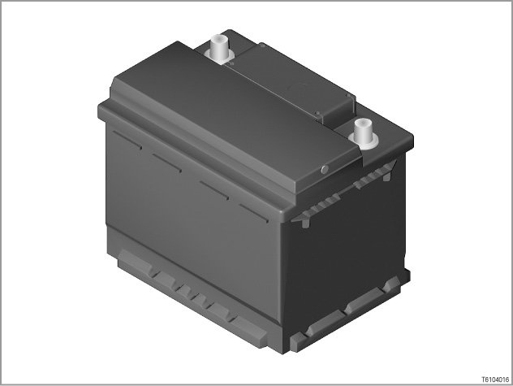
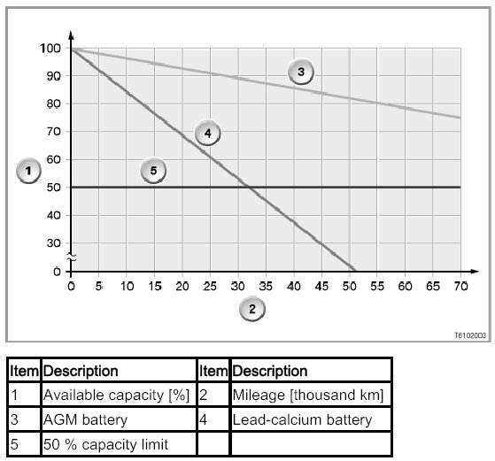
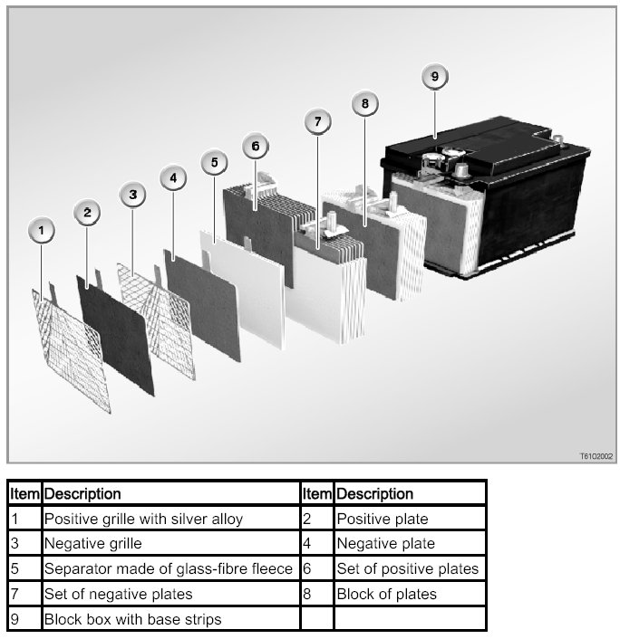

61 20 ... AGM Battery
61 20 ... AGM Battery

Introduction
In September 2002, the first so-called VRLA batteries, better known as AGM batteries came into use. (VRLA means Valve Regulated Lead Acid, i.e. lead acid battery with pressure relief valve; AGM stands for Absorbent Glass Mat, i.e. absorbent glass-fibre fleece)
AGM batteries are fitted in models with electrical loads/consumers which have a high energy demand.
With the option SA 146 (2nd battery), the AGM battery (70 Ah) is fitted as the 2nd battery.
The constantly increasing energy demand of modern vehicle electrical systems calls for ever more powerful battery solutions. A modern luxury-class vehicle has some 100 actuator motors that have to be fed with electrical current. Added to these are safety, environmental and comfort and convenience elements which are increasingly becoming standard features, such as e.g. Antilock Brake System (ABS), Dynamic Stability Control (DSC), electric steering effort assistance (EPS), heated catalytic converter, electronic chassis and suspension control, air conditioning and navigation system. Current consumption is considerable even when the vehicle is not in use.
The somewhat higher price compared with a battery of similar size is fully balanced by the following benefits:
- greatly longer service life
- improved starting reliability at low temperatures
- reliable starting of engines with high starting current requirements, e.g. high-performance diesel engines
- 100 % freedom from maintenance
- low risk in the event of an accident (reduced environmental risk)

In contrast to conventional lead-calcium batteries, the sulphuric acid in a battery with fleece technology is not held freely in the battery housing. Rather, 100% of the sulphuric acid is bound into the mats of the glass-fibre fleece (separators). For this reason, no acid can escape if the battery housing is damaged. In addition, the AGM battery is sealed to be airtight. This is possible because the gases are converted back into water as a result of the separator permeability.
Brief component description
An AGM battery can be recognized by its black housing and the lack of a so-called "Magic Eye".

Construction
The AGM battery differs from the conventional lead calcium battery as follows:
- larger plates: Larger plates allow a 25% larger power density.
- Separators made of glass-fibre fleece: These can cause an up to 3-times higher cycle stability to be reached. This improves the cold starting capability, the power consumption and service life.
- Airtight housing with pressure relief valve (please refer to "How it works"):
The inspection plugs are sealed and can not be opened.
- Battery acid bound in glass-fibre fleece: Battery acid is not found free in the housing as before, but is rather bound 100% in the glass-fibre fleece. This gives increased security against the acid escaping and thus reduces the environmental risk.
How it works
The AGM battery differs from conventional batteries in its non-polluting and substance-retaining behavior during charging.
When a vehicle battery is charged, the electrolysis process emits the gases oxygen and hydrogen.
- In a conventional wet lead calcium battery, the two gases hydrogen and oxygen are dissipated into the atmosphere.
- In an AGM battery, the two gases are converted back into water: The oxygen which is created at the positive electrode during charging passes through the permeable glass fibre fleece to the negative electrode. At the negative electrode the oxygen reacts with the arriving hydrogen ions in the electrolyte to form water (oxygen cycle).
In this manner, the gas, and thus the electrolyte, is not lost.
Only in the event of an excessively heavy build-up of gas, i.e. excessively high pressure build-up (20 to 200 m bar), does the pressure relief valve discharge the gas. In this process, the pressure relief valve does not allow any oxygen in the air to enter. Because the pressure in the battery is regulated by a valve, the AGM battery is also known as the VRLA battery (valve-regulated lead acid).
Notes for Service department
It is necessary when handling an AGM battery to observe some particular points pertaining to battery changing and installation location.
Charging
WARNING: Do not charge the AGM battery with e 15.2 V. Do not use rapid-charging programs.
When charging removed batteries (so-called stand alone batteries), do not exceed the maximum charging voltage of 15.2 V at room temperature. Also, for charging via positive battery connection point the maximum charging voltage of 15.2 volt at room temperature must not be exceeded. The batter can be damaged even with short charging of the AGM battery with a charging voltage higher than 15.2 volts. A charging voltage of more than 15.2 V is usually used in quick charging routines.
Installation location
WARNING: Do not install the AGM battery in the engine compartment.
The AGM battery must not be installed in the engine compartment on account of the high spatial temperature differences, otherwise its service life will be significantly shortened.
Housing
WARNING: Do not open AGM batteries.
On no account may AGM batteries be opened, as the ingress of oxygen from the atmosphere would cause the battery to lose its chemical balance, rendering it unserviceable.
Battery renewal
On principle any conventional lead-calcium battery can be replaced with an AGM battery. No changes result for the vehicle electrical system by using an AGM battery.
NOTE: AGM batteries are especially recommended for "problem customers.
"Problem customers" have a very high energy throughput through the battery. This high energy throughput is caused by stationary loads/consumers (TV, independent heating, etc.) and a bad use profile for the battery ("chauffeur operation", short-distance driving, "stop and go"). The use of an AGM battery is recommended for these problem customers.